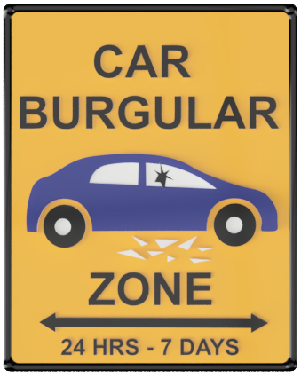
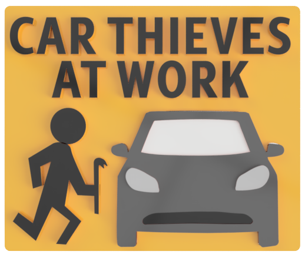
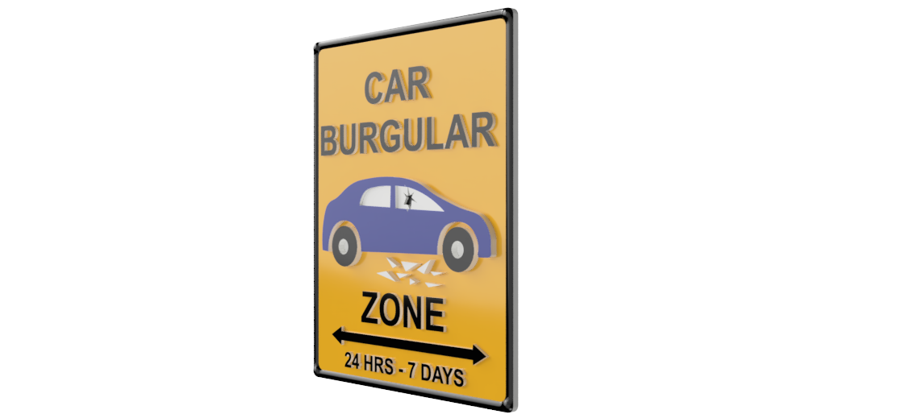
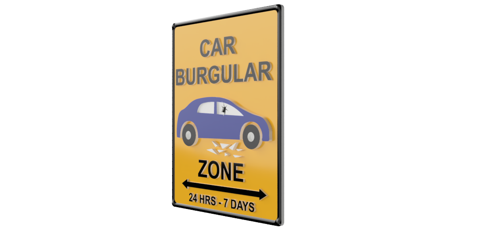
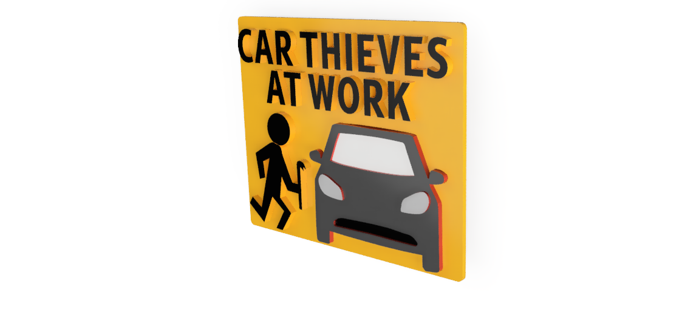
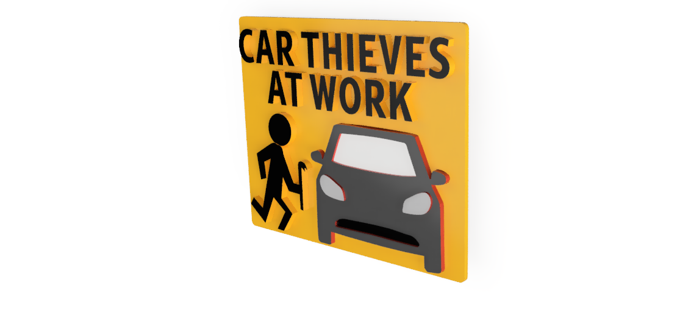
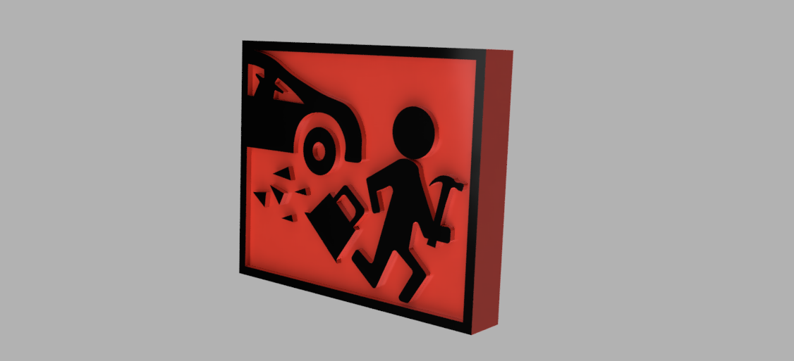
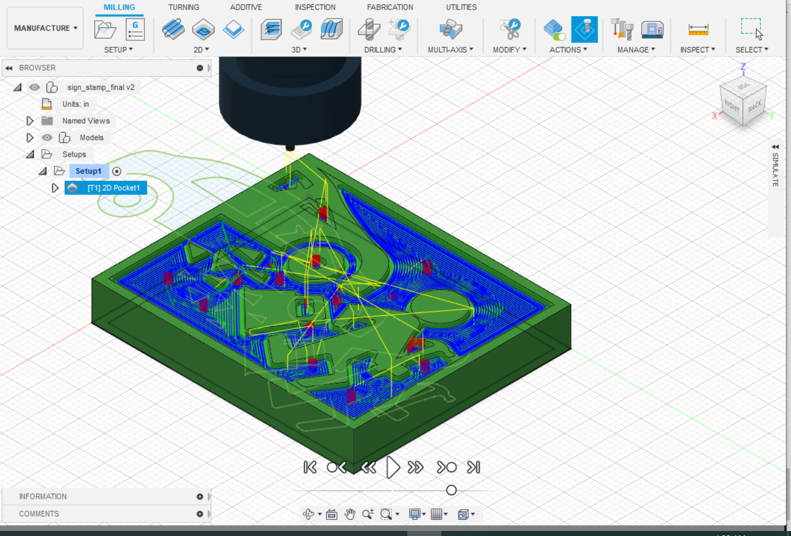
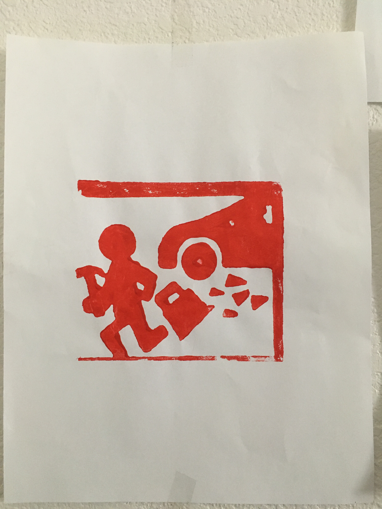
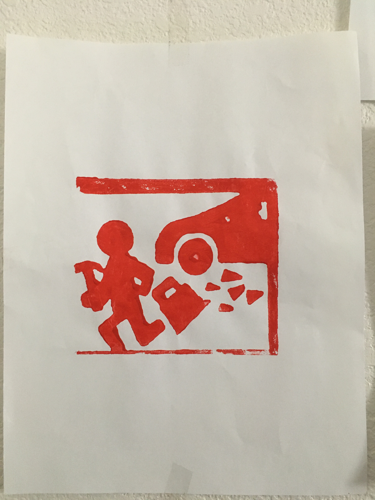

Signs
Phase 1: Location Scouting, Brainstorming designs


Designs for mock designs. Inspiration came from reaccuring car break ins and cars stolen around the Bay Area.
Location #1: BART

This location is appropriate because this lots of foot traffic and there is a parking structure for BART for people to park their cars.
Location #2: Parking Lot


This location is appropriate because this is where people park their cars to go shopping or to go to BART. Usually Parking lots are hotspots for burgulars to break into these spaces.
Location #3: Neighborhood


This locations is appropriate because my neighborhood app watch alert always gives me notifications of sketchy people looking through people's cars. I've also had a personal experience happen to me of my dad's truck being stolen.
Location #4: Caltrain


This location is apprioate because there's lots of foot traffic and a spot for people to park their cars in a long period of time.
Locations of Signs
1st image: BART, 2nd Image: Caltrain, 3rd image: neighborhood, 4th image: parking
Phase 2: Location Scouting, Brainstorming designs
Link to model 1
I used the letter R because its the first letter and initial of my name.
Link to model 2
I decided to use the logo of both musician Porter Robinons and Madeon for their Shelter tour.This logo is a combination of both Porter's and Madeon's logos. I saw them when they went on tour together. I really miss going to shows because covid.
Phase 3 & 4: Stamp File and 1st 2 Simulated Signs
On Thurs, went on campus to use CNC machine.
 
Here's the 2 signs a modeled using fusion
Phase 5: Sim Signs Refined Mockups placed in their locations


Simulated sign mock up
Phase 6: Final Sign Project


 

Link to Sign 1


 

Link to Sign 2
Phase 7: Stamp Project
 
Link to Stamp
Wooden Sign


Prints
 
